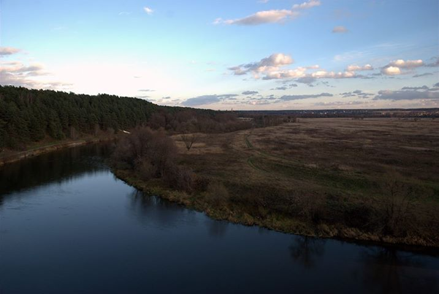

Ю.Насимович и др. Краеведение Москвы
Ю.Насимович, Э.Лихачёва. Статьи из сборника "Природа Москвы"
Ю.Насимович. Комментарии к безобразиям в Кусковском лесопарке
Ю.Насимович. Топонимика Северо-Восточного округа Москвы
Ю.Насимович. Яузское болото – бывшее «вышневолоцкое» водохранилище. О направлении течения Яузы и соседних рек. (в кн. "Научные труды национального парка «Лосиный остров»")
Ю.Насимович и др. Природные объекты Северо-Восточного округа Москвы
Ю.Насимович и др. Природные объекты Северо-Западного округа Москвы (отчёты 2011 года: история и топонимика, общее описание, флористические списки)
Ю.Насимович и др. Природа Зеленограда (статьи депонированы в ВИНИТИ)
Ю.Насимович. Природа Московской области (статьи депонированы в ВИНИТИ)
Ю.Насимович. Природные и культурные достопримечательности Одинцовского района
Ю.Насимович и др. Флора Москвы (статьи депонированы в ВИНИТИ)
Ю.Насимович. Прежняя и современная флора Петровско-Разумовского
В.Романова, Ю.Насимович. Ценные ботанические объекты в городских лесах Москвы (в кн.: Роль проектных и научных разработок в ускорении научно-технического прогресса лесохозяйственного производства. М., Госкомлес СССР, 1988)
Д.Медведева. Деревья и кустарники подмосковного города Химки
Ю.Насимович и др. Кольчиха - уникальное для ближнего подмосковья ключевое болото: геоморфология, гидрография, флора и фауна
Ю.Насимович, Е.Суслова, К.Теплов, Г.Ерёмкин, В.Савельев, А.Шулаков Флора Полосни
Ю.Насимович. Взаимоотношения между Fomes fomentarius, Piptoporus betulinus и Phellinus igniarius, поселяющимися на березе пушистой (опубликовано в "Бюллетене Московского общества испытателей природы" в 1983 г. (т. 88, вып. 1))
Ю.Насимович и др. статьи по рекреационной экологии и охране природы
Ю.Насимович. Реки, озёра и пруды Москвы
Эта же книга одним файлом в zip-архиве (отформатированный текст в досовской кодировке)
Ю.Насимович. Аннотированный список названий рек, ручьёв и оврагов Москвы (книга депонирована в ВИНИТИ)
Ю.Насимович. Природный заказник на московской реке Сетуни
Ю.Насимович. История региональной московской ботаники
Ю.Насимович. Московский ботаник Василий Дмитриевич Бочкин
Ю.Насимович. и др. Тополя: научные статьи
Фотографии из походов с Ю.А. Насимовичем 2012-2013 гг. (на mail.ru)
М.Ю.Коробко, Ю.А.Насимович, Л.П.Рысин. Алтуфьево (Москва 2000) - на сайте hist-usadba.narod.ru
М.Ю.Коробко, Ю.А.Насимович, Л.П.Рысин. Валуево (Москва 2000) - на сайте hist-usadba.narod.ru
| Одинцовский район, вид от Сосен в сторону Уборов (2 октября 2013) фото Натальи Жемчужиной | |
|  | Одинцовский район, вид от Сосен в сторону Уборов (30 октября 2013) фото Натальи Жемчужиной |
Последнее изменение страницы 30 Jun 2022